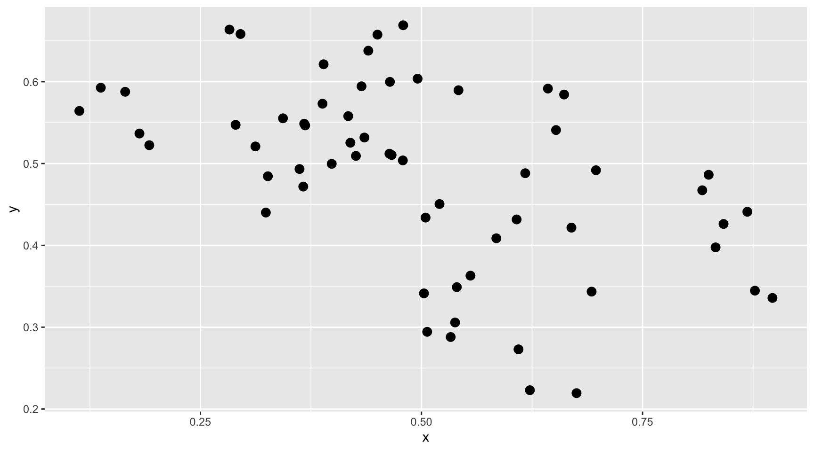
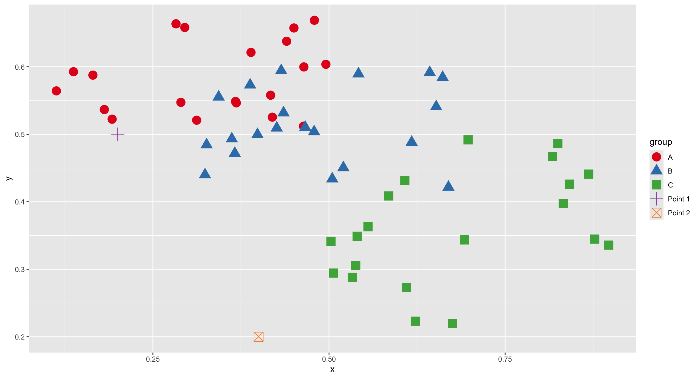
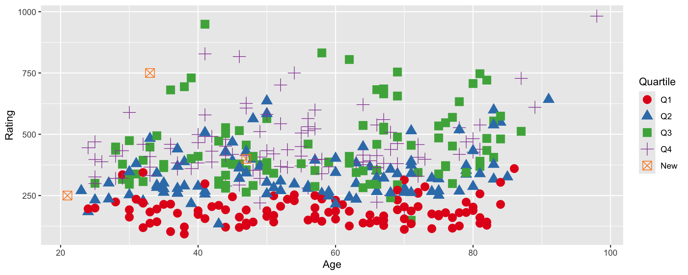

k-Nearest Neighbors (KNN)
DSC365: Introduction to Data Science
2026-10-22
Announcements
Mini Project 2
- Due Tonight at 11:59 in Blueline
Lab 5 (Linear Models)
- Due next Tuesday (October 27) at 11:59 pm in Blueline
Quiz 3: in class next Thursday, October 29
- Covers: Prediction/KNN/Tree-Based Methods
Source code for today’s slides – don’t forget to comment out the include_graphics lines!
Classifiers
Classification vs. Regression
A model predicts a response variable (\(y\)) from predictor variables (\(x\))
Regression:
Classification:
“Lazy” learning
Lazy learning: no assumptions necessary to classify data
Example: Consider the plot below - describe the relationship between x and y.

“Lazy” learning
What if the data points belonged to three different groups, like this? How should a new data point, \((0.2, 0.5)\) be classified? What about \((0.4, 0.2)\)?

\(k\)-Nearest Neighbors
Bayes Classifier
A good classifier minimizes Testing Error (fraction of mis-classified observations)
- Bayes Classifier produce the lowest possible test error rate (proof)
Bayes Classifier assigns each observation to is most likely class using:
\[P(Y = j|X = x_0)\]
Problems:
\(k\)-nearest neighbor (KNN) classifier:
A non-parametric supervised learning method that estimates the conditional probability.
Output:
KNN classification algorithm
Choose a value for \(k\) (see note1)
knn() function
Example: Let’s classify our new points
\(k=2\)?
Advantages and Disadvantages of KNN
Advantages:
Disdvantages:
Choice of \(k\)

Examples
Example: Credit Utilization
Predict which utilization quantile a new customer falls into based on their application data (credit rating and age).
| Name | Age | Credit Rating |
|---|---|---|
| Lacey | 33 | 750 |
| Zach | 47 | 400 |
| Ashlee | 21 | 250 |

Example: Credit Utilization
\(k=20\)?
Model Evaluation
Example: Credit utilization
Is KNN an effective predictor of quartile using an applicant’s age, credit rating, income, number of existing credit cards, and education level?
Example: Credit utilization (cont)
Randomly selected 100 observations for testing, assigned the other 300 to training set.
set.seed(365)
test_ID = sample(1:nrow(Credit), size = 100)
TEST = Credit[test_ID,]
TRAIN = Credit[-test_ID, ]
#only select variables we want
knn_train = TRAIN %>% dplyr::select(Age, Rating, Income,
Cards, Education)
knn_test = TEST %>% dplyr::select(Age, Rating, Income,
Cards, Education)
knn50 = knn(train = knn_train,
test = knn_test,
cl = TRAIN$Quartile,
k = 50, prob = TRUE)
knn50 [1] Q4 Q1 Q4 Q1 Q4 Q3 Q4 Q4 Q1 Q4 Q2 Q2 Q4 Q4 Q3 Q1 Q1 Q3 Q4 Q1 Q4 Q2 Q3 Q2 Q2
[26] Q4 Q3 Q4 Q4 Q2 Q2 Q2 Q3 Q2 Q1 Q4 Q4 Q3 Q3 Q2 Q1 Q2 Q3 Q4 Q1 Q4 Q3 Q2 Q4 Q4
[51] Q4 Q2 Q4 Q1 Q4 Q1 Q1 Q2 Q1 Q1 Q1 Q4 Q1 Q4 Q4 Q1 Q4 Q4 Q4 Q4 Q2 Q1 Q4 Q2 Q3
[76] Q2 Q2 Q1 Q1 Q4 Q2 Q4 Q2 Q3 Q2 Q4 Q1 Q4 Q4 Q2 Q4 Q4 Q4 Q4 Q2 Q2 Q4 Q2 Q1 Q2
attr(,"prob")
[1] 0.66 0.86 0.54 0.96 0.50 0.40 0.36 0.52 0.96 0.66 0.54 0.56 0.54 0.42 0.38
[16] 0.96 0.92 0.42 0.46 0.98 0.44 0.52 0.40 0.54 0.60 0.46 0.46 0.42 0.62 0.52
[31] 0.52 0.56 0.40 0.54 0.58 0.46 0.52 0.38 0.46 0.52 0.96 0.44 0.44 0.42 0.98
[46] 0.50 0.44 0.48 0.54 0.46 0.50 0.58 0.46 0.90 0.50 0.94 0.96 0.42 0.96 0.82
[61] 0.54 0.48 0.54 0.58 0.44 0.96 0.44 0.46 0.58 0.54 0.34 0.96 0.44 0.58 0.42
[76] 0.34 0.54 0.96 0.96 0.42 0.60 0.52 0.56 0.40 0.48 0.54 0.64 0.34 0.60 0.56
[91] 0.44 0.50 0.48 0.50 0.46 0.52 0.44 0.58 0.78 0.58
Levels: Q1 Q2 Q3 Q4Evaluation: Classification Accuracy
Now, we’ll set the testing data as “new data”, and make predictions using the k-nearest neighbors from the training data.
Try it yourself!
set.seed(365)
test_ID = sample(1:nrow(Credit), size = 100)
TEST = Credit[test_ID,]
TRAIN = Credit[-test_ID, ]
#only select variables we want
knn_train = TRAIN %>% dplyr::select(Age, Rating, Income,
Cards, Education)
knn_test = TEST %>% dplyr::select(Age, Rating, Income,
Cards, Education)
our_choice_of_k = 17
knnk = knn(train = knn_train,
test = knn_test,
cl = TRAIN$Quartile,
k = our_choice_of_k, prob = TRUE)
t = table(knnk, TEST$Quartile)
sum(diag(t))/nrow(TEST)[1] 0.61Caveats
Scaling Data
KNN for regression
KNN Regression algorithm
KNN can also predict quantitative responses - alternative to Linear Regression1
Choose a value for \(k\) (same as last time)
find \(k\) nearest neighbors (same as last time)
Example: Credit Utilization
[1] 0.157343839 0.011478125 0.144051032 0.005360386 0.142495141[1] 0.0386645Linear Regression vs KNN Regression
Parametric vs. nonparametric methods:
-
Linearity:
-
Curse of Dimensionality:
-